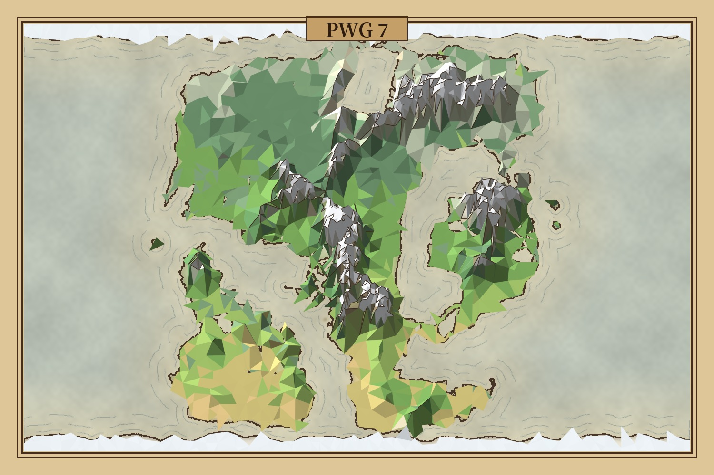
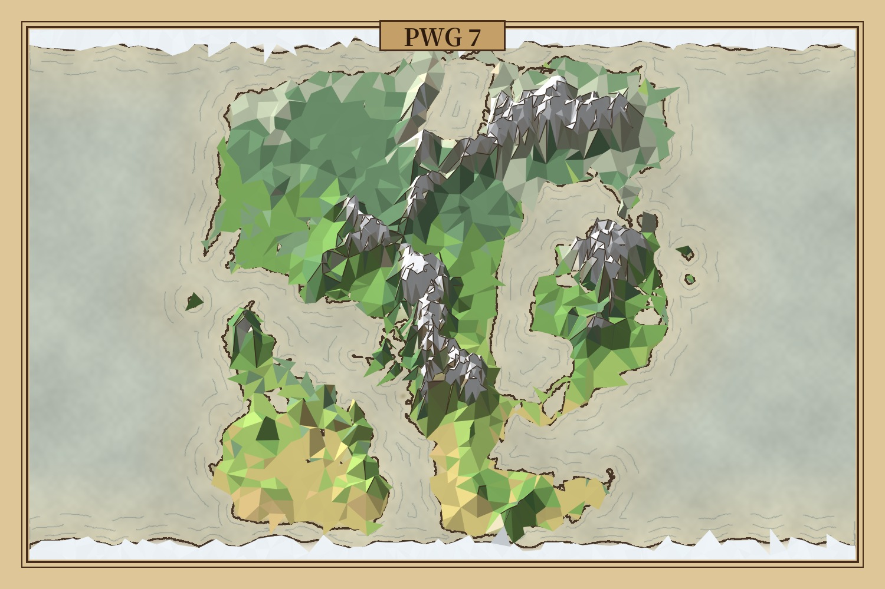
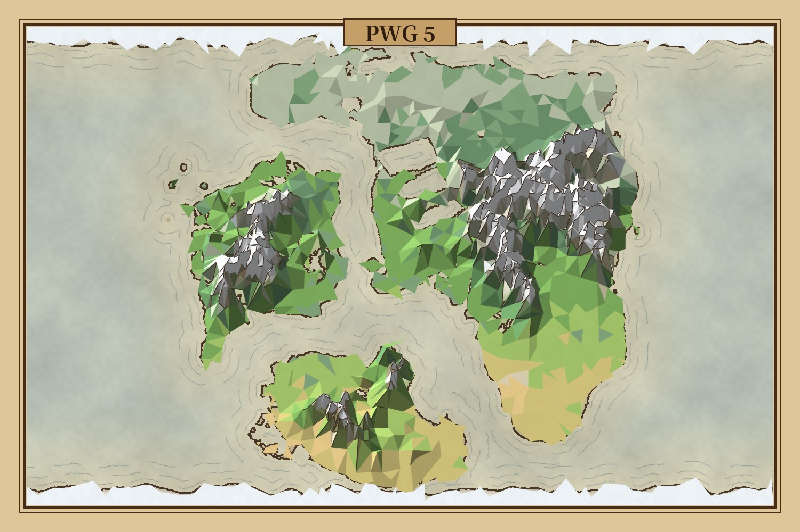
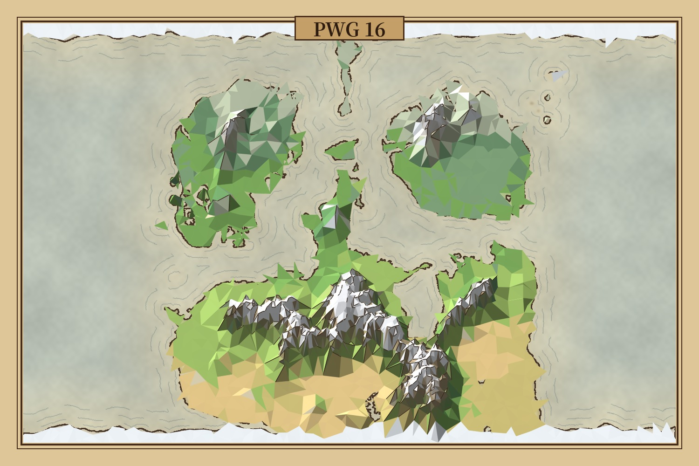
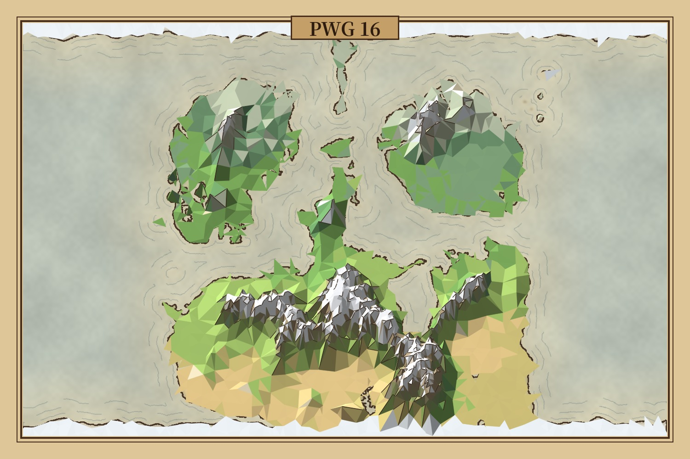
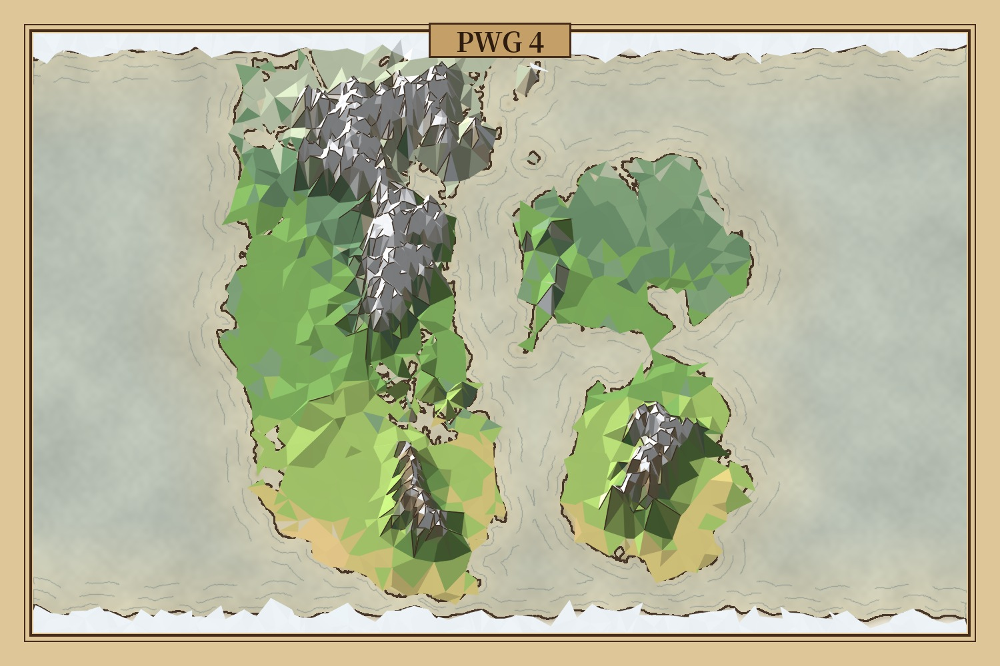
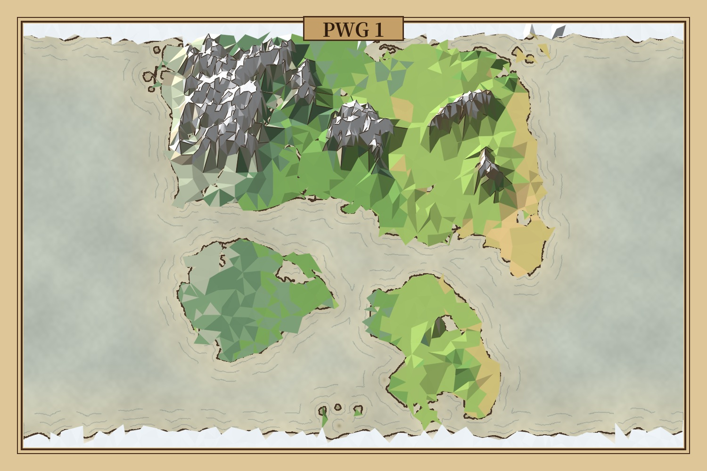

概要: mapstyle38へのユーザー指示(地図全体の3Dを少し強く、山を少し弱く)に従い、全体の盛り上げを0.45→0.62(約1.4倍)、山の集まる所の強調を最大2倍→約1.55倍にしました。ほかは同じです。各図は上=mapstyle38、下=今回。

絵番号 E159
絵番号 E001 絵番号 E160
絵番号 E160
絵番号 E002
絵番号 E161
絵番号 E003 絵番号 E162
絵番号 E162
絵番号 E004
絵番号 E163 絵番号 E005
絵番号 E005
次: もう一段階の調整が要るか、このまま基準にするかを判断していただく。